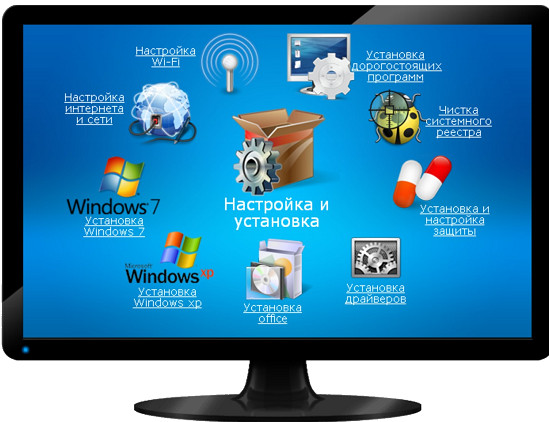

Установка Windows
Специалисты нашего технического отдела производят в Усть-Каменогорске установку Windows XP / 7 / 8 / 10 с выездом на дом, а также в стационаре. Мы устанавливаем не просто операционную систему Виндовс, а полный комплект всего что необходимо: система windows, драйверы, программы, кодеки, антивирус и сохраняем все ваши документы и фото. При необходимости даже ваши программы могут успешно работать после переустановки Windows на ноутбуке или компьютере.
Даже если у вас сломался компьютер или ноутбук, наши специалисты также окажут вам услуги и по ремонту компьютера.
Звоните или подайте заявку на ремонт на нашем сайте!
Установка Windows XP, Windows 7, Windows 8, Windows 10
Установка Windows может произведена как с нуля на новый ноутбук или компьютер, так и переустановка системы с восстановлением всех пользовательских файлов. Также бывает на новых ноутбуках вместо Windows предустановлена система MS DOS или Linux - в этом случае мы тоже можем вам помочь, если для ноутбука имеются драйверы для Windows.
К установке Windows у нас особый подход, так как это базовая программа от которой зависит стабильность работы компьютера/ноутбука и ваш комфорт. При необходимости, мы проведем глубокую диагностику причин низкой производительности операционной системы и устранение для высокой скорости работы системы, высокой защищенности от вирусов и бесперебойной работы всех программ.
К установке Windows у нас особый подход, так как это базовая программа от которой зависит стабильность работы компьютера/ноутбука и ваш комфорт. При необходимости, мы проведем глубокую диагностику причин низкой производительности операционной системы и устранение для высокой скорости работы системы, высокой защищенности от вирусов и бесперебойной работы всех программ.

Различные типы установки Виндовс
В зависимости от ситуации требуется различные виды восстановления операционной системы, мы обеспечиваем следующие виды работ:
- Новая установка Windows - Чтобы работа с Вашим компьютером проходила слаженно и корректно, установка windows должна выполняться высококвалифицированным специалистом в этой сфере. Поэтому специалисты нашего сервис центра готовы предложить Вам свои услуги по установке операционной системы от компании Microsoft.
- Переустановка Windows - Вам будет оказана качественная услуга, в результате которой при переустановке windows удастся сохранить настройки, а все параметры будут соответствовать вашим предпочтениям.
- Восстановление Windows - Восстановление Windows - услуга, которой пользуются наши клиенты в тех случаях, когда по какой-либо причине Виндовс переустанавливать нельзя, например если имеются важные программы, которые должны работать а дистрибутива их нет. И если вам все-таки необходимо восстановить Windows, то наши специалисты готовы помочь вам в этом.
- Настройка Windows - Операционная система заметно «притормаживает»? Установленные программы работают не корректно? Вам необходима профессиональная настройка Windows! Наш мастер приедет к вам домой или же в офис и проведет все необходимые настройки Виндовс.
- Удаление синих и черных экранов - Такая проблема возникает у компьютеров, где установлена операционная система Windows. В ранних версиях Windows был аналог «черного экрана», известный как «синий экран смерти». Наши квалифицированные специалисты приедут к Вам и ликвидируют «черный экран», сохранив при этом всю Вашу информацию.
- Другие работы - Наши специалисты по ремонту компьютеров и ноутбуков - ваши лучшие друзья, которые понимают важность хороших отношений с клиентов. Для всех жителей города, а также всем иногородним клиентам мы предлагаем не только качественные услуги компьютерной помощи, но и самые выгодные цены на ремонт, установку виндовс и заправку картриджей в Усть-Каменогорске.
Установка драйверов и программ
После установки или восстановления работы операционной системы, как правило, требуется установить различные драйверы и программы, которые мы успешно установим на ваш компьютер. Мастера "X2X" в рамках установки Windows оказывают следующие виды услуг:
- Установка Windows
- Переустановка Windows
- Восстановление Windows
- Настройка Windows
- Установка антивирусных программ
- Удаление синих и черных экранов
- Настройка Интернета
- Настройка Wi-Fi
- Настройка локальной сети
- Установка и настройка программ
Даже если у вас сломался компьютер или ноутбук, наши специалисты также окажут вам услуги и по ремонту компьютера.
Звоните или подайте заявку на ремонт на нашем сайте!